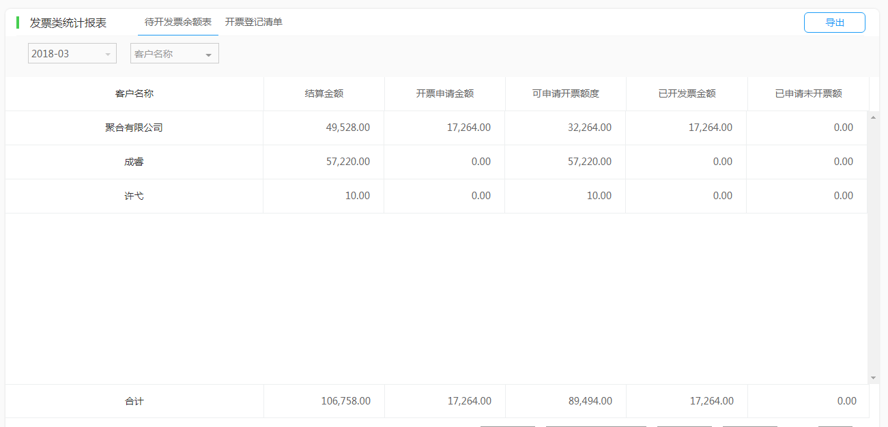
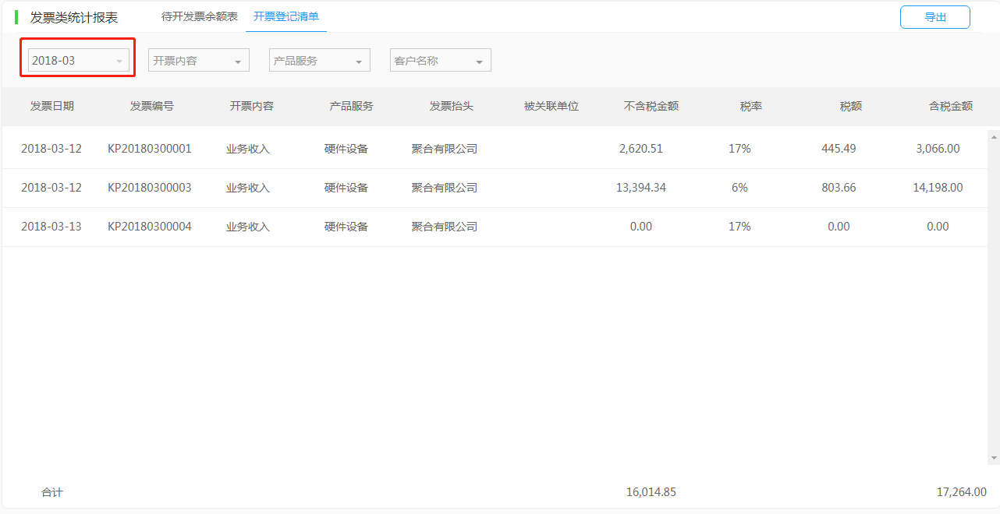

简介（谢理群）
合同订单（谢理群、汪晓燕）
新建订单
变更订单
导入导出订单
营收结算（汪晓燕、申剑）
应收结算单
交付提报
收入确认
支出结算（欧阳洁、谢理群）
支出记录
支出报销单
其他付款单
发票管理（申剑、汪晓燕）
资金管理（梅子豪）
收款认领
银行对账单
收款发布
收款单
付款单
银企对账
统计报表（梅子豪）
盈利类统计报表
支出类统计报表
收入类统计报表
业绩类统计报表
往来类统计报表
发票类统计报表
总账类统计报表
自动会计（梅子豪）
设置（谢理群、汪晓燕）
其他流程帮助（老潘）
常见问题（汪晓燕、欧阳洁）
本书使用 GitBook 发布
发票类统计报表
发票类统计报表
待开发票余额表
在代开发票余额表下，企业能查看当月对每个客户开票申请金额、可申请开票额度、已开发票金额和已申请未开票额。全面清晰的展现企业的待开、已开发票情况。

开票登记清单
在开票登记清单下，企业可以详细查看每一张发票开票情况，方便企业了解发票各方面详细信息。

results matching "
"
No results matching "
"